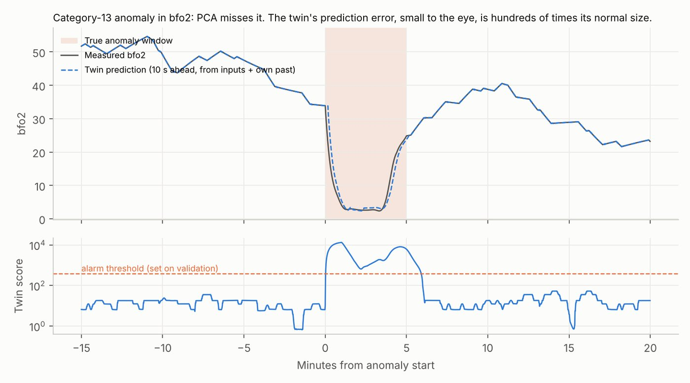

Back to all work
A digital twin that catches anomalies and names the sensor that caused them
Many anomalies look normal on their own and are only wrong relative to what the system was told to do. A model of the system's input-output behaviour can see them; generic detectors cannot.
80%of 146 unseen anomalies caught
0.09false alarms per day
0.88event F1 (PCA: 0.69)
98%correct root-cause sensor
The problem
Industrial telemetry is full of normal variation driven by operator commands and the environment. A detector that ignores those inputs either misses anomalies or floods operators with false alarms.
Most published scores on such benchmarks are also inflated by point-adjusted metrics. I wanted results an operator would recognise.
What I did
- Split the data the way it would run in operation: an anomaly-free period to fit models and measure normal error, one month only for choosing settings and thresholds, and three months as a test set scored once.
- For each telemetry channel, fitted a linear ARX model that predicts the channel from the commands and environmental inputs over the previous ~6 minutes. Fitted on normal data only.
- Scaled prediction errors by their normal size (robust MAD), smoothed over 60 s, and took the largest channel as both the anomaly score and the root-cause estimate.
- Compared against PCA reconstruction error and Isolation Forest using event recall, false alarms per day, event F1 and detection delay, without point adjustment.
Results


| Detector | Event recall | False alarms / day | Event F1 | Median delay |
|---|---|---|---|---|
| Digital-twin residuals | 80% | 0.09 | 0.88 | 6 s |
| PCA reconstruction error | 55% | 0.37 | 0.69 | 161 s |
| Isolation Forest, point-wise | 32% | 35.3 | 0.17 | 273 s |
| Isolation Forest, 60 s windows | 58% | 73.0 | 0.15 | 118 s |
Test set: 146 anomalies over about 35 days. All thresholds fixed on the validation month.
Limitations
- The benchmark is simulated and noise-free. With sensor noise added, the twin's event F1 falls to 0.69–0.77; it never drops below PCA, but at 1% noise the two are level.
- A real plant would need nonlinear or physics-based models, refitted whenever the plant changes.
- Weakest anomaly categories reach 67–69% recall, and PCA does better on two of the 13 categories.